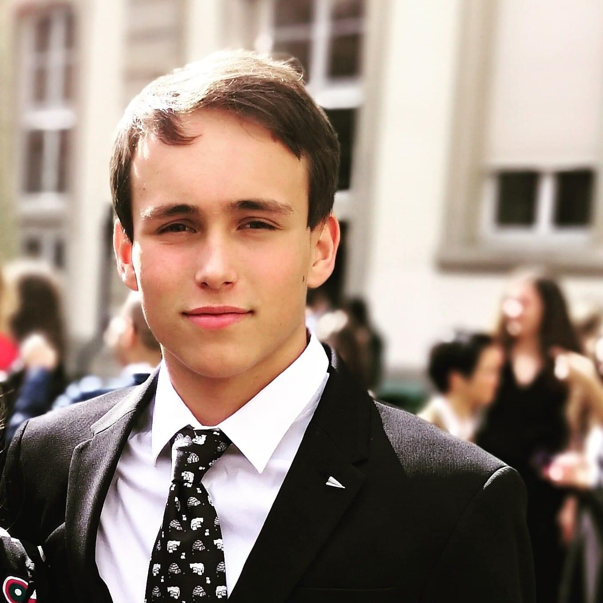


THE CONCEPT
Ideas Worth Spreading
L'association TEDx Mines Alès est ravie de vous présenter le concept captivant des conférences TEDx. Inspiré par les renommées conférences TED (Technology, Entertainment, Design), TEDx offre une plateforme locale et autonome où les esprits créatifs, innovateurs et passionnés peuvent partager leurs idées extraordinaires. En tant qu'événements organisés de manière indépendante, les TEDx permettent à notre communauté de découvrir des perspectives diverses et stimulantes sur des sujets allant de la technologie à la culture en passant par la science et l'éducation. Les intervenants, soigneusement sélectionnés, captivent l'audience avec des discours percutants, chaque intervention étant conçue pour inspirer, informer et susciter la réflexion. Rejoignez-nous pour une expérience enrichissante où des idées qui valent la peine d'être partagées prennent vie.
THE TEAM
2024
Esteban Felden
Président
Texte de présentation pour Esteban. Vous pouvez ajouter des détails sur son rôle, ses responsabilités et ses compétences.
Léna Connesson
Vice-Présidente
Texte de présentation pour Léna. Vous pouvez ajouter des détails sur son rôle, ses responsabilités et ses compétences.
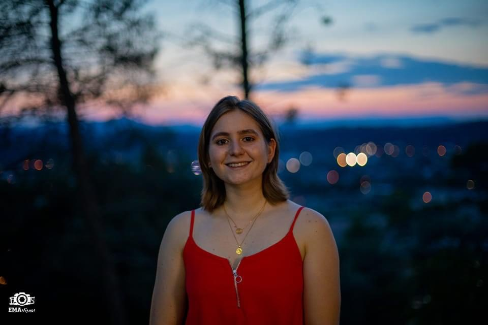
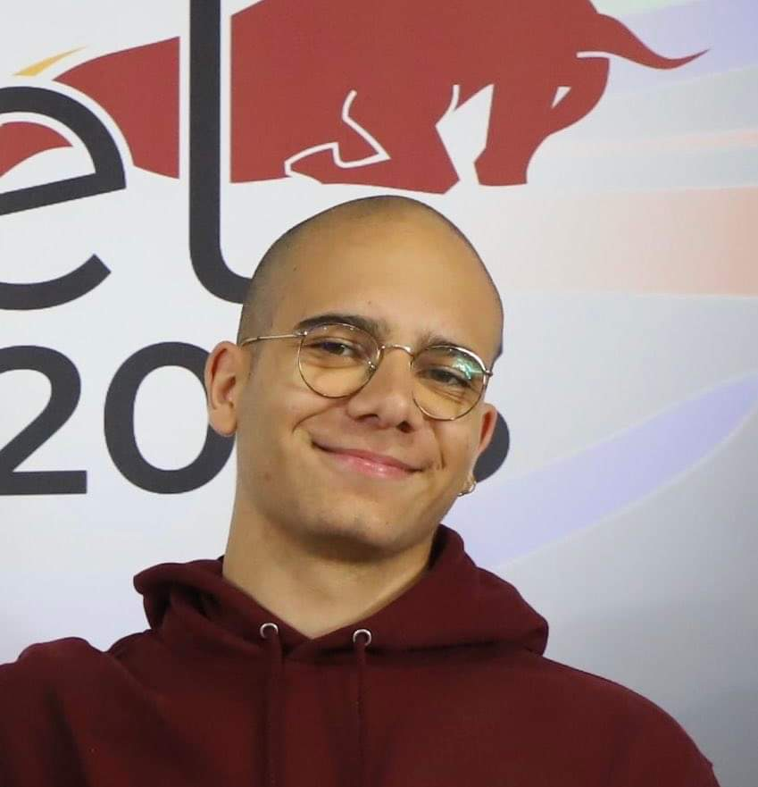
Roann
Trésorier
Texte de présentation pour Roann. Vous pouvez ajouter des détails sur son rôle, ses responsabilités et ses compétences.
2020
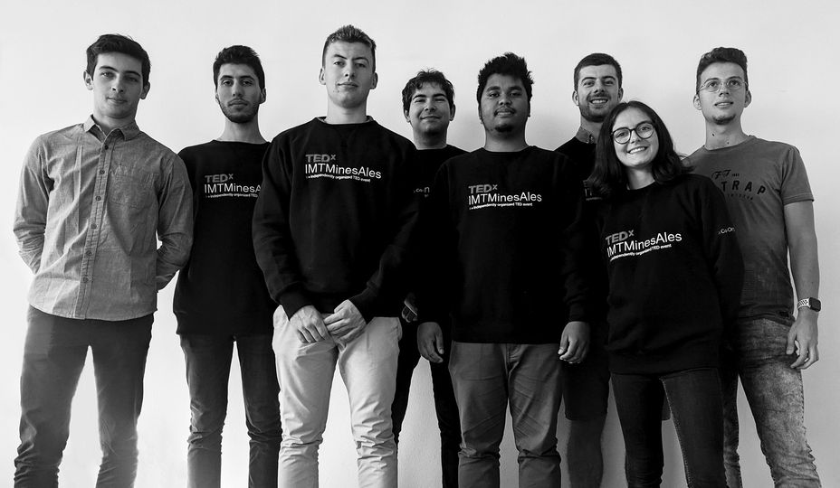
Equipe 2020
Les premiers
2021
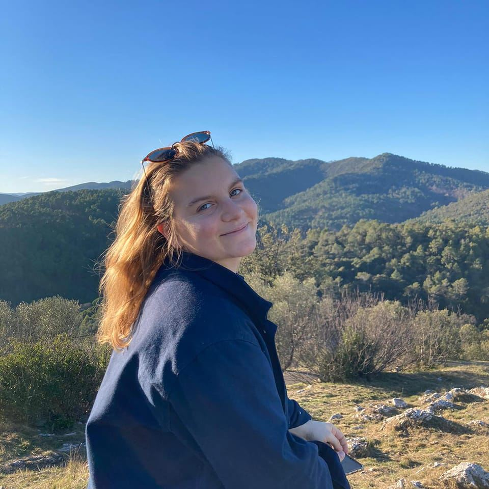
Juliet Drouard
Président
Texte de présentation pour Esteban. Vous pouvez ajouter des détails sur son rôle, ses responsabilités et ses compétences.
Mathilde Dol & Rosalie Bouda
Vices-Présidentes
Texte de présentation pour Léna. Vous pouvez ajouter des détails sur son rôle, ses responsabilités et ses compétences.
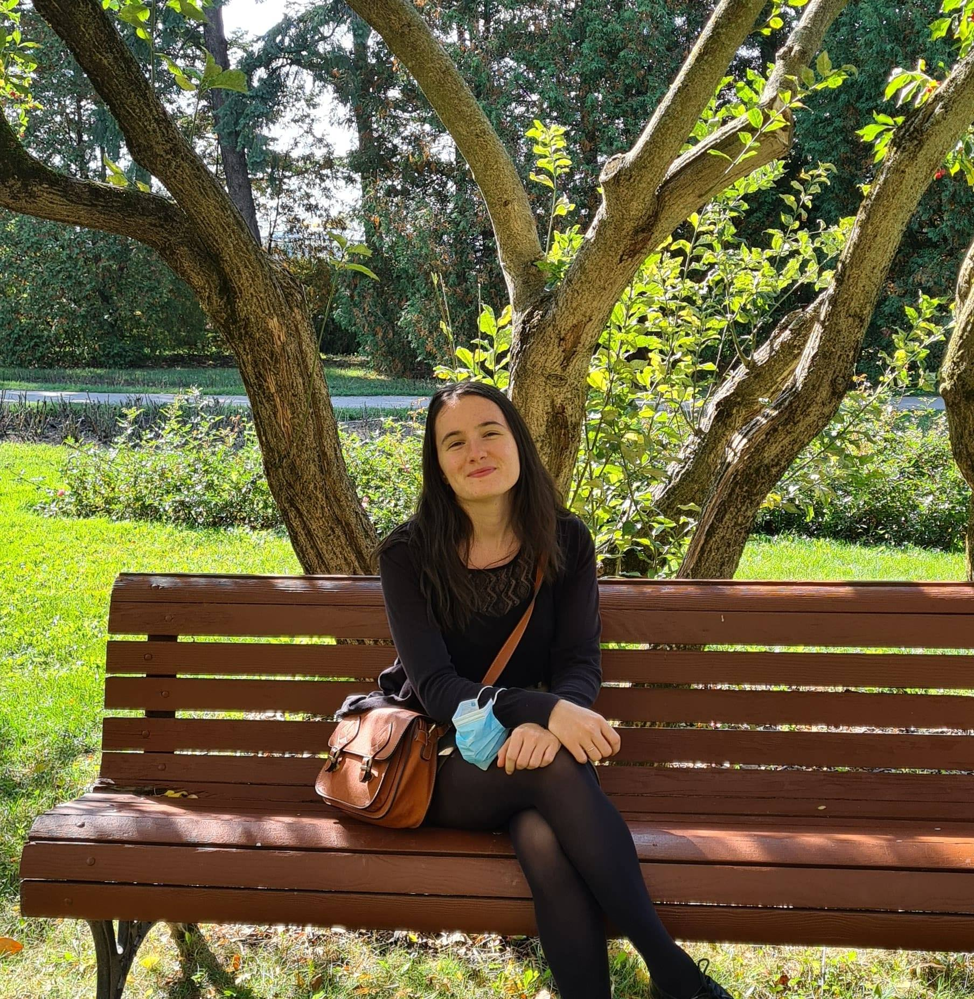
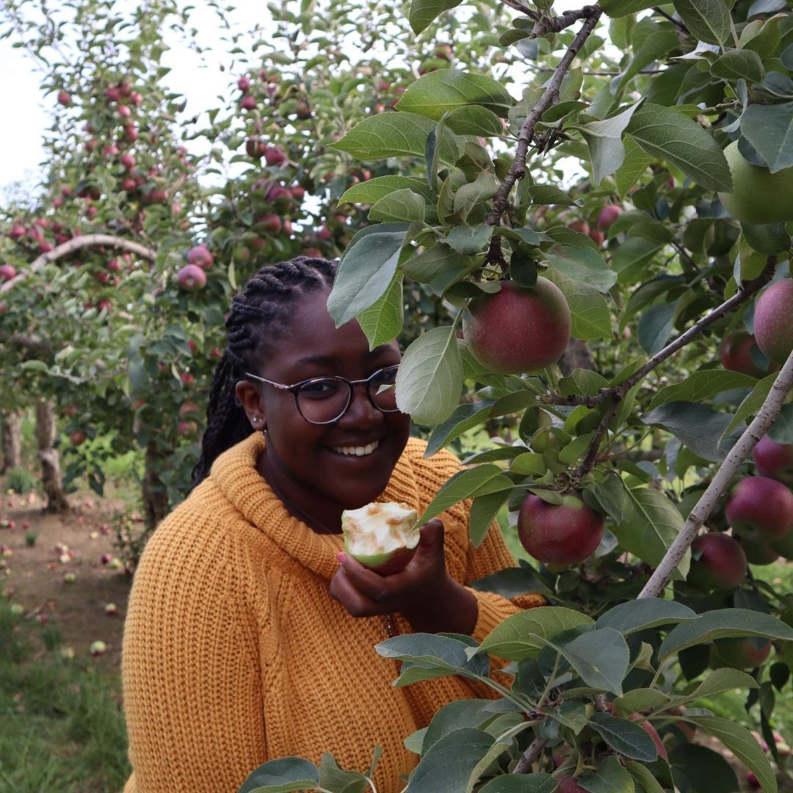
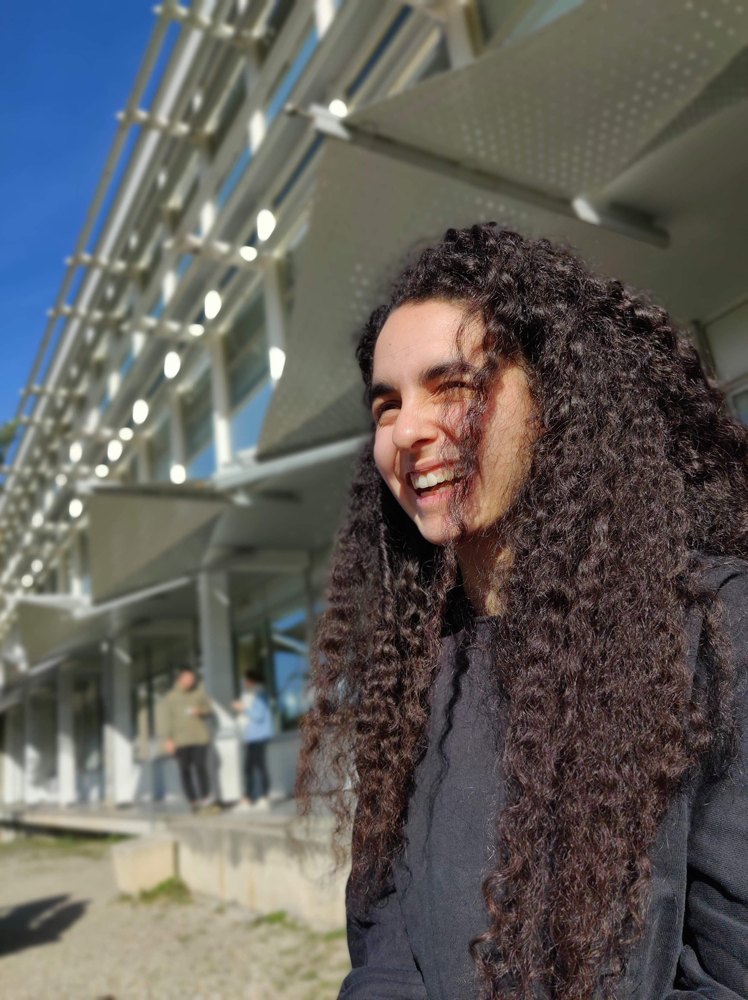
Anissa Mabed
Trésorière
Texte de présentation pour Roann. Vous pouvez ajouter des détails sur son rôle, ses responsabilités et ses compétences.
Coline Michaud
Secrétaire
Texte de présentation pour Roann. Vous pouvez ajouter des détails sur son rôle, ses responsabilités et ses compétences.
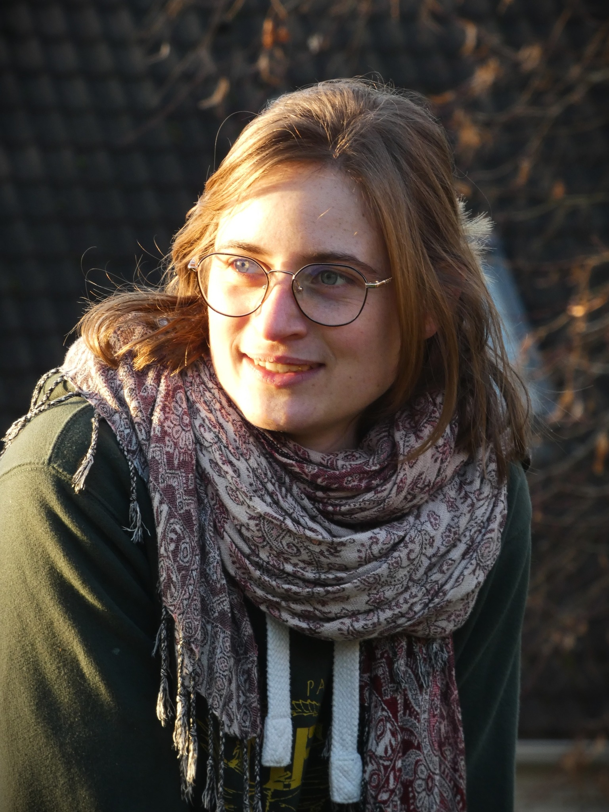
THE EVENTS
2024
2023
2022
2021
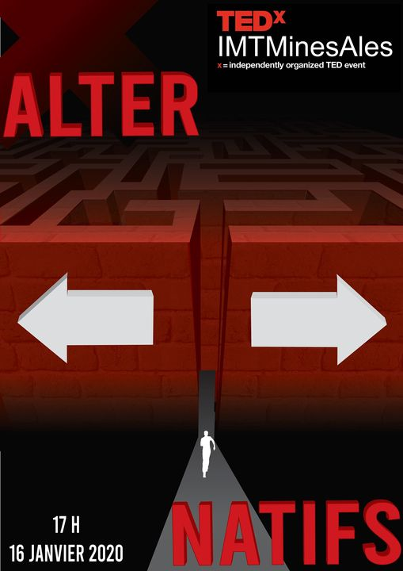
Alter-natifs
On se retrouve le 16 Janvier 2020 à 17h sur Alès pour une soirée placée sous le thème "Alter-natifs".
teaserTexte de présentation de l'événement.
Bruno Clair
Directeur de recherche au CNRS au Laboratoire de Mécanique et Génie Civil (LMGC) de Montpellier en biomécanique de l'arbre et sciences du bois. Son partenaire, Cédric Montero est chercheur au LMGC Montpellier et Maître de Conférences à l'Université de Montpellier et enseignant à l'IUT de Nîmes.
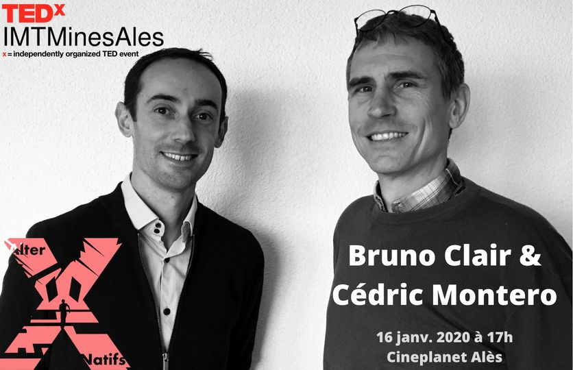
Alter-natifs
On se retrouve le 16 Janvier 2020 à 17h sur Alès pour une soirée placée sous le thème "Alter-natifs".
teaserTexte de présentation de l'événement.
Bruno Clair
Directeur de recherche au CNRS au Laboratoire de Mécanique et Génie Civil (LMGC) de Montpellier en biomécanique de l'arbre et sciences du bois. Son partenaire, Cédric Montero est chercheur au LMGC Montpellier et Maître de Conférences à l'Université de Montpellier et enseignant à l'IUT de Nîmes.
Alter-natifs
On se retrouve le 16 Janvier 2020 à 17h sur Alès pour une soirée placée sous le thème "Alter-natifs".
teaserTexte de présentation de l'événement.
Bruno Clair
Directeur de recherche au CNRS au Laboratoire de Mécanique et Génie Civil (LMGC) de Montpellier en biomécanique de l'arbre et sciences du bois. Son partenaire, Cédric Montero est chercheur au LMGC Montpellier et Maître de Conférences à l'Université de Montpellier et enseignant à l'IUT de Nîmes.
2020
On se retrouve le 16 Janvier 2020 à 17h sur Alès pour une soirée placée sous le thème "Alter-natifs".
TeaserNous commençons aujourd’hui par un duo qui nous vient de #Montpellier 📍 ! Le premier membre, Bruno Clair est directeur de recherche au CNRS au Laboratoire de Mécanique et Génie Civil (LMGC) de Montpellier en biomécanique de l'arbre et sciences du bois 🌳. Son partenaire, Cédric Montero est lui aussi chercheur au LMGC Montpellier mais aussi Maître de Conférences à l'Université de Montpellier et enseignant à l'IUT de Nîmes.
⬅️🏃🏻♂️➡️ Aujourd’hui nous vous dévoilons notre deuxième #speaker : Eduardo Blanco 🧔🏻. #Ingénieur de l'environnement diplômé à l'Universidade de São Paulo au Brésil, il a réalisé un échange aux Mines #Alès en 2010 🇧🇷🇫🇷. Quelques années après il s’est spécialisé dans le domaine du développement urbain durable par un master à l'École Nationale des Ponts et Chaussés. Engagé dans la promotion du développement durable, il a créé un cabinet d'études dans le domaine au Brésil, dans lequel il a travaillé pendant 5 ans en tant que chef de projet, notamment sur des projets d'urbanisme et de transport et développement durable pour les collectivités 🏙🌎🌱. En 2019 il a finalement rejoint le #Ceebios pour collaborer en tant que chargé de mission et pour réaliser une thèse en partenariat avec le Muséum National d'Histoire Naturelle sur les projets urbains biomimétiques et régénératifs, avec un accent sur les méthodologies d'analyse des services écosystémiques rendus par ces derniers 🔎🐛.
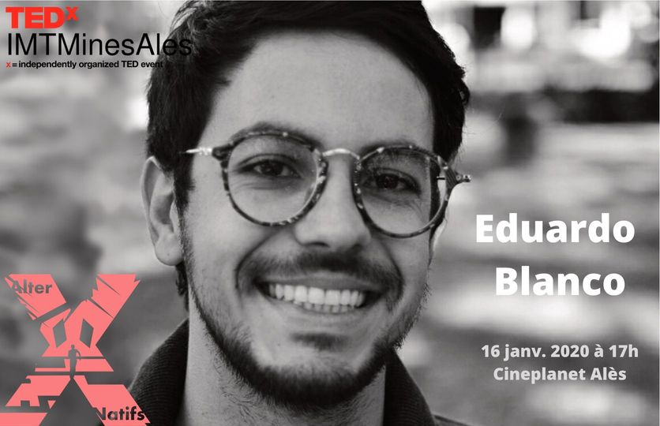⬅️🏃🏻♂➡️ Troisième speaker à l'honneur jeudi prochain : Xavier Basset ! Xavier Basset est un ingénieur formé aux Mines d’Alès, sorti en 2003 (promotion 151) dans le domaine de l'ingénierie logicielle 💻. Il dirige la #startup #Hoomano qu’il a fondé il y a maintenant 5 ans, entreprise spécialisée dans le développement de l’#intelligence émotionnelle 💭. Depuis #Lyon, Xavier est à la tête d'une équipe dévouée à rendre notre #technologie plus intelligente mais surtout plus empathique : en participant à l’essor de #robots sociaux capables d'interagir de manière intuitive et naturelle, Xavier travaille à instaurer une relation durable de qualité entre l’Homme et la machine 💡.

⬅️🏃♂️➡️ J-6 C'est maintenant le moment de vous présenter notre quatrième #speaker ! 🥁 Priscille Déborah est une #artiste #peintre professionnelle, connue en #France et à l’étranger (New York, Berlin, Danemark, Cameroun, Suisse, Italie, Belgique…) pour ses expositions, galeries et #œuvres expressionnistes 👩🎨🌍. Au travers de ses performances, parfois en “live”, elle cherche à créer de l’énergie et instaure une vitalité riche et sincère entre elle et son public. Priscille a su tisser ce lien fort lors d’interventions notables dans des milieux très différents : festivals, expositions, ou même milieux professionnels (Société générale, Thalès, Stelia Aerospace, ...). Au travers de l’#art mais aussi de sa #biographie écrite "La peine d'être vécue" 📖, elle travaille aussi à démystifier le #handicap par l’art : ayant pu bénéficier de la technologie #TMR, un type d’intervention chirurgicale nouveau, elle est la première française à posséder une prothèse de bras #bionique directement contrôlée par le cerveau 💪🧠.
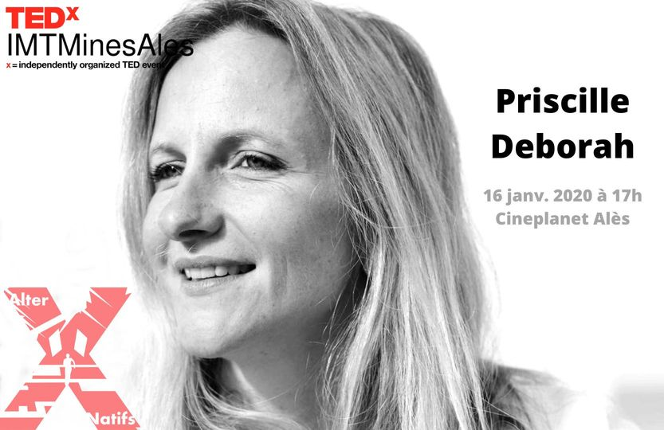⬅️🏃♂️➡️ Aujourd'hui nous vous présentons notre #speaker Sylvain Perret. Il est directeur du département "#Environnements & #Sociétés" et directeur scientifique au #CIRAD "Centre de Coopération Internationale en Recherche Agronomique pour le Développement", à #Montpellier 👨🔬. Pendant plus de 30 années d'expérience en recherche et enseignement supérieur dans les pays du Sud, il s'est intéressé à la gestion des #ressources #renouvelables, (notamment de l'eau agricole), à l'évaluation de systèmes agricoles et au développement #rural 💧🚜. Il utilise plus récemment les méthodologies de l'analyse du cycle de vie, de l'analyse d'éco-efficience et de l'analyse multicritère de systèmes agricoles ♻️. Il dirige désormais un département de 250 personnes, dont 210 chercheurs, et s'intéresse à l'évaluation de l'impact sociétal de la #recherche pour le #développement, soit comment l'approche est novatrice et explore de nouvelles alternatives.

⬅️🏃♂️➡️ Aujourd’hui nous vous invitons à découvrir notre sixième #speaker : Claude Garcia. Écologue de formation, il s'est spécialisé en #forêts tropicales, mais il y a longtemps qu'il n’a pas mesuré un arbre 🌳. Il travaille aujourd'hui pour le #CIRAD, le Centre International de Recherche Agronomique pour le Développement, et dirige l'équipe Gestion des Forêts et Développement de l'Ecole Polytechnique Fédérale de Zurich en #Suisse 👥. Ses #recherches visent à comprendre les paysages tropicaux en mutation. Avec ses collègues, il utilise des #jeux pour comprendre la prise de décision et les stratégies des #acteurs 🎰. Autrement dit, il voyage partout dans le monde et fait jouer les gens ✈🌎. Et ça marche ! Il rêve désormais de faire #jouer les négociateurs de la COP.
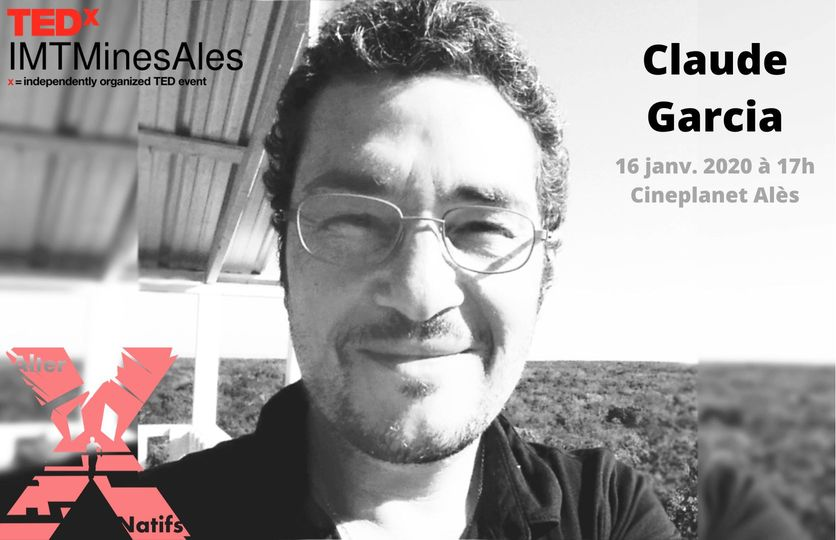⬅️🏃♂️➡️ Dernier #speaker à l'honneur : Ronan Bolé 👨💼. Diplômé de l’#ENIM puis de la #KEDGE Business School, Ronan est devenu un expert dans les secteurs de l’#industrie, de la #logistique et de la supply chain 👨🎓. Il commença sa carrière en rejoignant le groupe #Freudenberg en tant que Project Manager où il restera 6 ans jusqu’à devenir Operations #Manager. Cette expérience sera suivie par son entrée chez l’équipementier automobile #Valéo, d’abord en #France puis en #Chine 🇫🇷🇨🇳. C’est en 2013 qu’il rejoint le géant américain #Amazon devenant d’abord Directeur Général du secteur géographique de #Lille puis, 3 ans après, Président Logistique d’Amazon France. L’une de ses missions concerne le grand projet de #robotisation de l’entreprise 🤖.
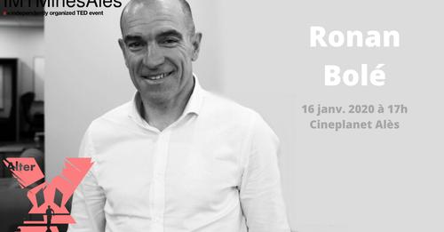